Plot Snippets - ggplot2
Foreword
- Output options: the ‘tango’ syntax and the ‘readable’ theme.
- Snippets and results.
Documentation¶
Dataset¶
For most examples, we use the mtcars, diamonds, iris, ChickWeight, recess, fish, Vocab, Titanic, mamsleep, barley, adult datasets.
The ggplot2 Package¶
library(ggplot2)
Import additional packages.
library(digest)
library(grid)
library(gtable)
library(MASS)
library(plyr)
library(reshape2)
library(scales)
library(stats)
library(tidyr)
For this project, import additional packages.
library(ggthemes)
library(RColorBrewer)
library(gridExtra)
library(GGally)
library(car)
library(Hmisc)
library(dplyr)
Suggested additional packages…
SECTION 1¶
Introduction¶
Exploring ggplot2, part 1
# basic plot
ggplot(mtcars, aes(x = cyl, y = mpg)) +
geom_point()

Exploring ggplot2, part 2
# cyl is a factor
ggplot(mtcars, aes(x = factor(cyl), y = mpg)) +
geom_point()
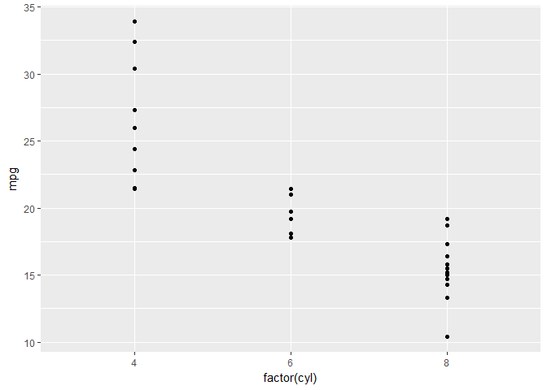
Exploring ggplot2, part 3
# scatter plot
ggplot(mtcars, aes(x = wt, y = mpg)) +
geom_point()

# add color
ggplot(mtcars, aes(x = wt, y = mpg, col = disp)) +
geom_point()

# change size
ggplot(mtcars, aes(x = wt, y = mpg, size = disp)) +
geom_point()
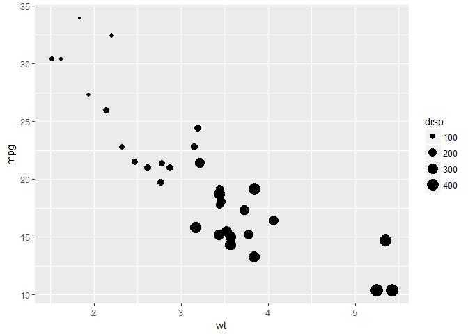
Exploring ggplot2, part 4
# Add geom_point() with +
ggplot(diamonds, aes(x = Carat, y = PricePerCt)) +
geom_point()
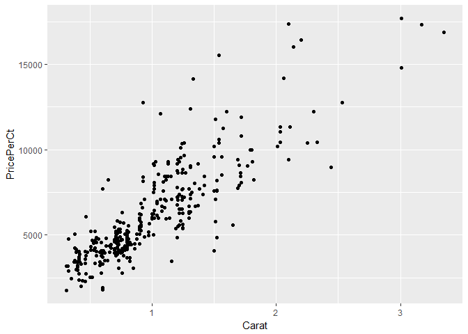
# Add geom_point() and geom_smooth() with +
ggplot(diamonds, aes(x = Carat, y = PricePerCt)) +
geom_point() + geom_smooth()
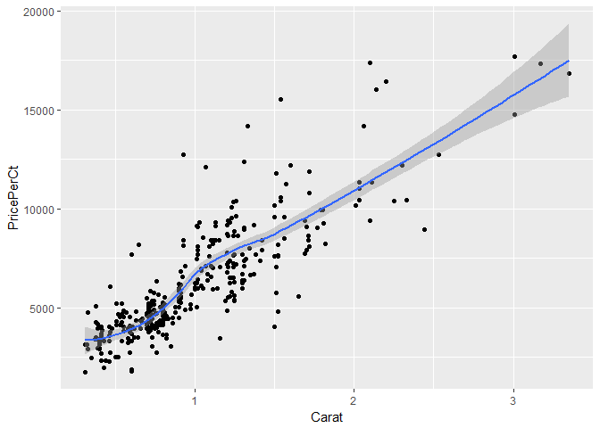
Exploring ggplot2, part 5
# only the smooth line
ggplot(diamonds, aes(x = Carat, y = PricePerCt)) +
geom_smooth()

# change col
ggplot(diamonds, aes(x = Carat, y = PricePerCt, col = Clarity)) +
geom_point()

# change the alpha
ggplot(diamonds, aes(x = Carat, y = PricePerCt, col = Clarity)) +
geom_point(alpha = 0.4)
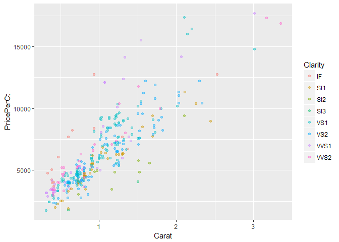
Exploring ggplot2, part 6
# 2 facets for comparison
library(gridExtra)
data(father.son, package = 'UsingR')
a <- ggplot(father.son, aes(fheight, sheight)) +
geom_point() +
geom_smooth(method = 'lm', colour = 'red') +
geom_abline(slope = 1, intercept = 0)
b <- ggplot(father.son, aes(fheight, sheight)) +
geom_point() +
geom_smooth(method = 'lm', colour = 'red', se = FALSE) +
stat_smooth()
grid.arrange(a, b, nrow = 1)
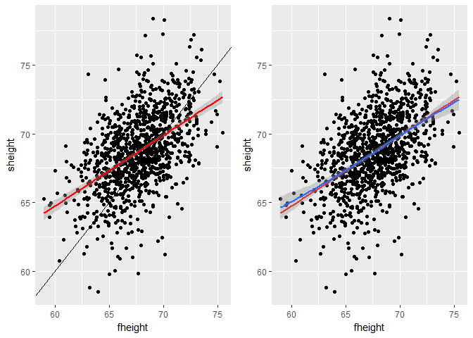
# load more data
data(oly12, package = 'VGAMdata')
# 2 facets for comparison
ggplot(oly12, aes(Height, Weight)) +
geom_point(size = 1) +
facet_wrap(~Sex, ncol = 1)
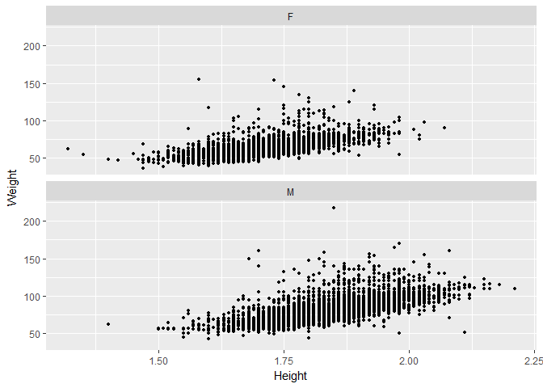
# create a new variable inside de data frame
oly12S <- within(oly12, oly12$Sport <- abbreviate(oly12$Sport, 12))
# multiple facets or splom
ggplot(oly12S, aes(Height, Weight)) +
geom_point(size = 1) +
facet_wrap(~Sport) +
ggtitle('Weight and Height by Sport')
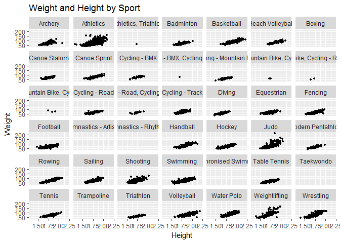
Understanding the grammar, part 1
# create the object containing the data and aes layers
dia_plot <- ggplot(diamonds, aes(x = Carat, y = PricePerCt))
# add a geom layer
dia_plot +
geom_point()

# add the same geom layer, but with aes() inside
dia_plot +
geom_point(aes(col = Clarity))

Understanding the grammar, part 2
set.seed(1)
# create the object containing the data and aes layers
dia_plot <- ggplot(diamonds, aes(x = Carat, y = PricePerCt))
# add geom_point() with alpha set to 0.2
dia_plot <- dia_plot +
geom_point(alpha = 0.2)
dia_plot
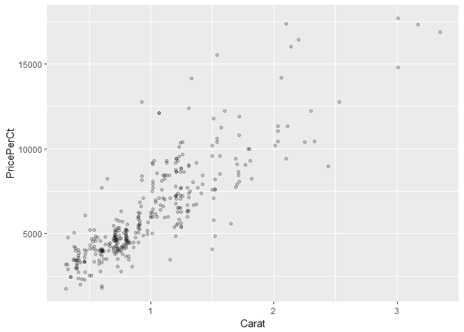
# plot dia_plot with additional geom_smooth() with se set to FALSE
dia_plot +
geom_smooth(se = FALSE)

Data¶
Base package and ggplot2, part 1 - plot
# basic plot
plot(mtcars$wt, mtcars$mpg, col = mtcars$cyl)
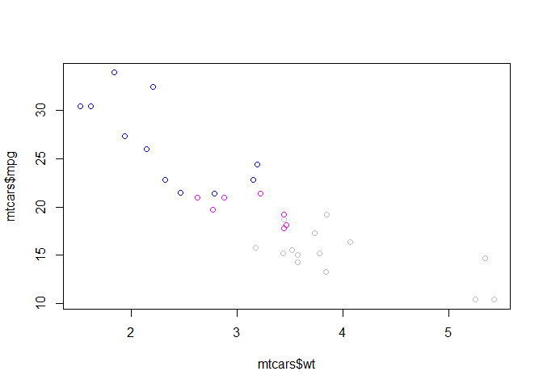
# change cyl inside mtcars to a factor
mtcars$cyl <- as.factor(mtcars$cyl)
# make the same plot as in the first instruction
plot(mtcars$wt, mtcars$mpg, col = mtcars$cyl)

Base package and ggplot2, part 2 - lm
transfer to other
# Basic plot
mtcars$cyl <- as.factor(mtcars$cyl)
plot(mtcars$wt, mtcars$mpg, col = mtcars$cyl)
# use lm() to calculate a linear model and save it as carModel
carModel <- lm(mpg ~ wt, data = mtcars)
# Call abline() with carModel as first argument and lty as second
abline(carModel, lty = 2)
# plot each subset efficiently with lapply
lapply(mtcars$cyl, function(x) {
abline(lm(mpg ~ wt, mtcars, subset = (cyl == x)), col = x)
})
1 2 3 4 5 6 7 8 9 10 11 12 13 14 15 16 17 18 19 20 21 22 23 24 25 26 27 28 29 30 31 32 33 34 35 36 37 38 39 40 41 42 43 44 45 46 47 48 49 50 51 52 53 54 55 56 57 58 59 60 61 62 63 64 65 66 67 68 69 70 71 72 73 74 75 76 77 78 79 80 81 82 83 84 85 86 87 88 89 90 91 92 93 94 95 | |
# draw the legend of the plot
legend(x = 5, y = 33, legend = levels(mtcars$cyl), col = 1:3, pch = 1, bty = 'n')

Base package and ggplot2, part 3
# scatter plot
ggplot(mtcars, aes(x = wt, y = mpg, col = cyl)) +
geom_point()

# include the lines of the linear models, per cyl
ggplot(mtcars, aes(x = wt, y = mpg, col = cyl)) +
geom_point() +
geom_smooth(method = 'lm', se = FALSE)
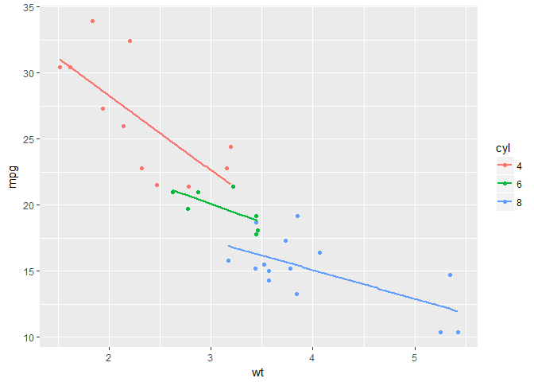
# include a lm for the entire dataset in its whole
ggplot(mtcars, aes(x = wt, y = mpg, col = cyl)) +
geom_point() +
geom_smooth(method = 'lm', se = FALSE) +
geom_smooth(aes(group = 1), method = 'lm', se = FALSE, linetype = 2)
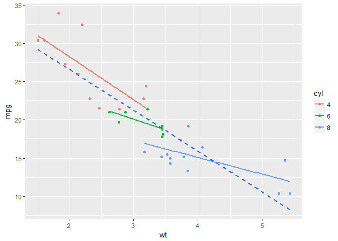
Variables to visuals, part 1
iris.tidy <- iris %>%
gather(key, Value, -Species) %>%
separate(key, c('Part', 'Measure'), '\\.')
# create 2 facets
ggplot(iris.tidy, aes(x = Species, y = Value, col = Part)) +
geom_jitter() + facet_grid(. ~ Measure)
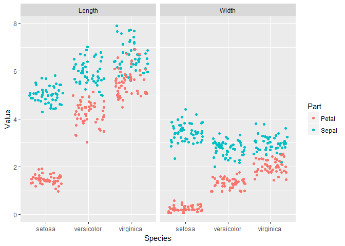
Variables to visuals, part 2
# Add a new column, Flower, to iris that contains unique ids
iris$Flower <- 1:nrow(iris)
iris.wide <- iris %>%
gather(key, value, -Species, -Flower) %>%
separate(key, c('Part', 'Measure'), '\\.') %>%
spread(Measure, value)
# create 3 facets
ggplot(iris.wide, aes(x = Length, y = Width, col = Part)) +
geom_jitter() +
facet_grid(. ~ Species)
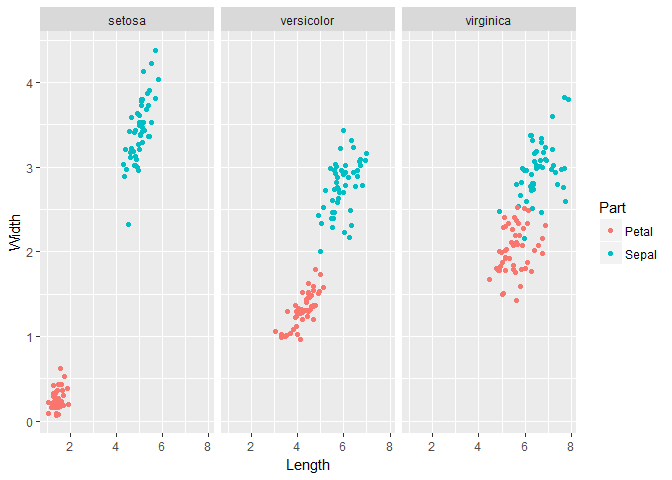
Aesthetics¶
All about aesthetics, part 1
# map cyl to y
ggplot(mtcars, aes(x = mpg, y = cyl)) +
geom_point()

# map cyl to x
ggplot(mtcars, aes(y = mpg, x = cyl)) +
geom_point()

# map cyl to col
ggplot(mtcars, aes(x = wt, y = mpg, col = cyl)) +
geom_point()

# change shape and size of the points
ggplot(mtcars, aes(x = wt, y = mpg, col = cyl)) +
geom_point(shape = 1, size = 4)

All about aesthetics, part 2
# map cyl to fill
ggplot(mtcars, aes(x = wt, y = mpg, fill = cyl)) +
geom_point()
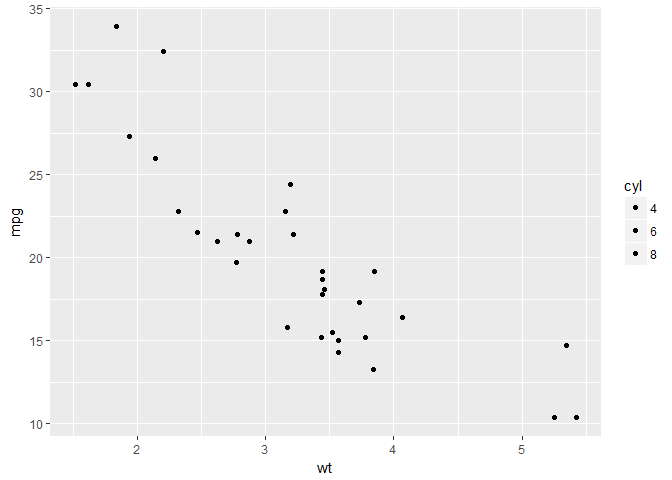
# Change shape, size and alpha of the points in the above plot
ggplot(mtcars, aes(x = wt, y = mpg, fill = cyl)) +
geom_point(shape = 16, size = 6, alpha = 0.6)
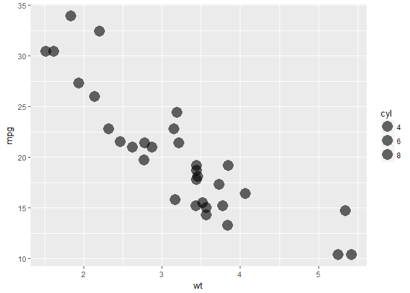
All about aesthetics, part 3
# map cyl to size
ggplot(mtcars, aes(x = wt, y = mpg, size = cyl)) +
geom_point()

# map cyl to alpha
ggplot(mtcars, aes(x = wt, y = mpg, alpha = cyl)) +
geom_point()
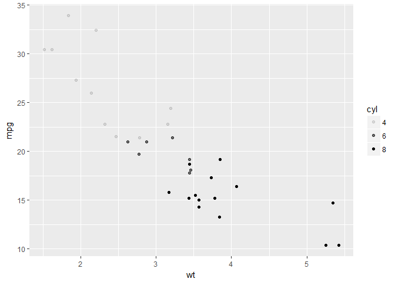
# map cyl to shape
ggplot(mtcars, aes(x = wt, y = mpg, shape = cyl, label = cyl)) +
geom_point()

# map cyl to labels
ggplot(mtcars, aes(x = wt, y = mpg, label = cyl)) +
geom_text()

All about attributes, part 1
# define a hexadecimal color
my_color <- '#123456'
# set the color aesthetic
ggplot(mtcars, aes(x = wt, y = mpg, col = cyl)) +
geom_point()

# set the color aesthetic and attribute
ggplot(mtcars, aes(x = wt, y = mpg, col = cyl)) +
geom_point(col = my_color)

# set the fill aesthetic and color, size and shape attributes
ggplot(mtcars, aes(x = wt, y = mpg, fill = cyl)) +
geom_point(size = 10, shape = 23, col = my_color)
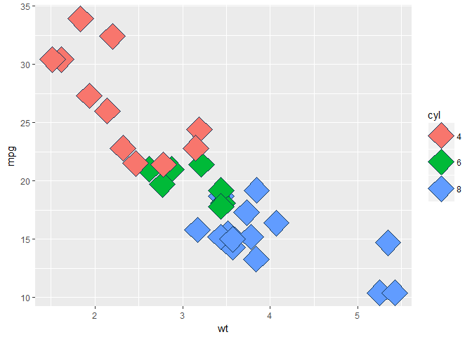
All about attributes, part 2
# draw points with alpha 0.5
ggplot(mtcars, aes(x = wt, y = mpg, fill = cyl)) +
geom_point(alpha = 0.5)

# raw points with shape 24 and color yellow
ggplot(mtcars, aes(x = wt, y = mpg, fill = cyl)) +
geom_point(shape = 24, col = 'yellow')
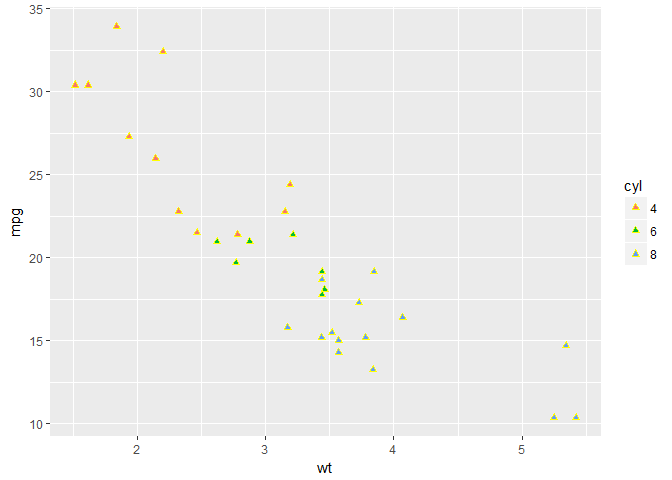
# draw text with label x, color red and size 10
ggplot(mtcars, aes(x = wt, y = mpg, fill = cyl)) +
geom_text(label = 'x', col = 'red', size = 10)
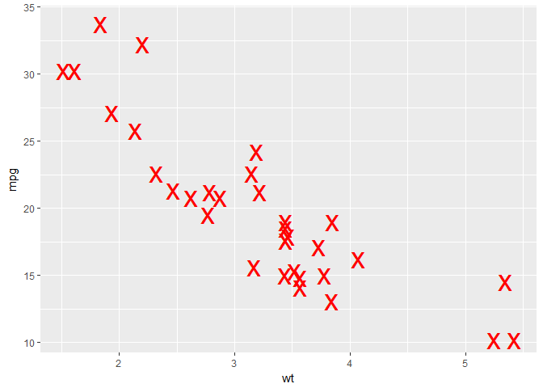
Going all out
# Map mpg onto x, qsec onto y and factor(cyl) onto col
ggplot(mtcars, aes(x = mpg, y = qsec, col = factor(cyl))) +
geom_point()

# Add mapping: factor(am) onto shape
ggplot(mtcars, aes(x = mpg, y = qsec, col = factor(cyl), shape = factor(am))) +
geom_point()
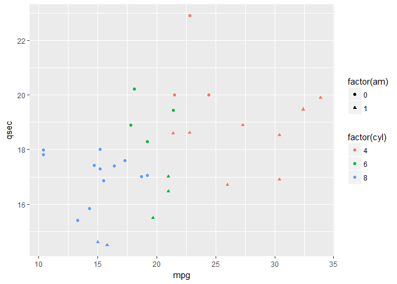
# Add mapping: (hp/wt) onto size
ggplot(mtcars, aes(x = mpg, y = qsec, col = factor(cyl), shape = factor(am), size = hp/wt)) +
geom_point()
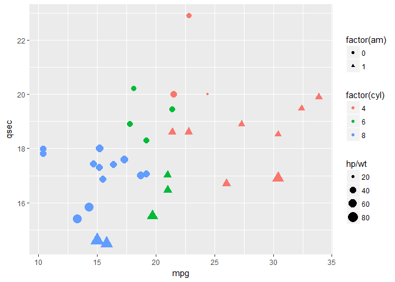
# Add mapping: rownames(mtcars) onto label
ggplot(mtcars, aes(x = mpg, y = qsec, col = factor(cyl), shape = factor(am), size = hp/wt)) +
geom_text(aes(label = rownames(mtcars)))
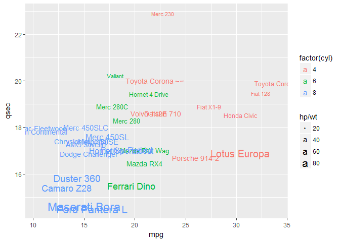
Position
# base layers
cyl.am <- ggplot(mtcars, aes(x = factor(cyl), fill = factor(am)))
# add geom (position = 'stack'' by default)
cyl.am +
geom_bar(position = 'stack')
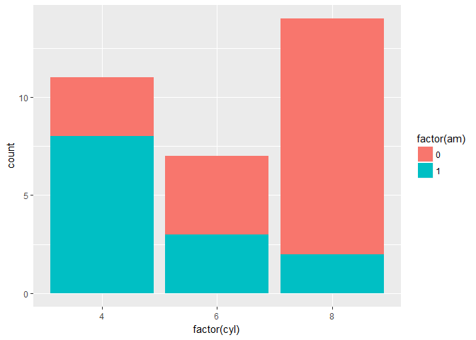
# show proportion
cyl.am +
geom_bar(position = 'fill')
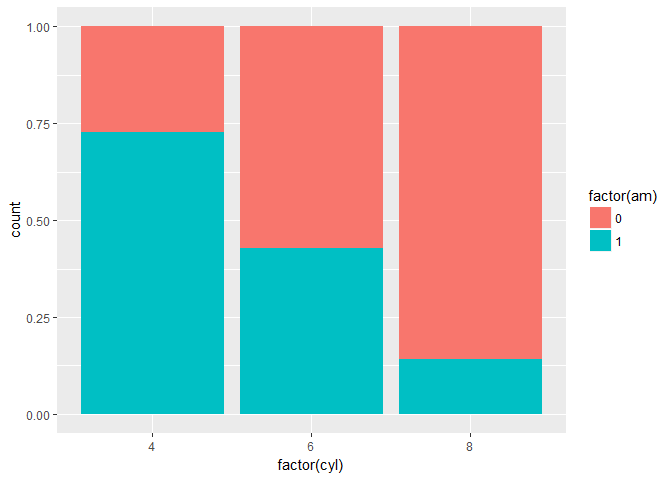
# dodging
cyl.am +
geom_bar(position = 'dodge')
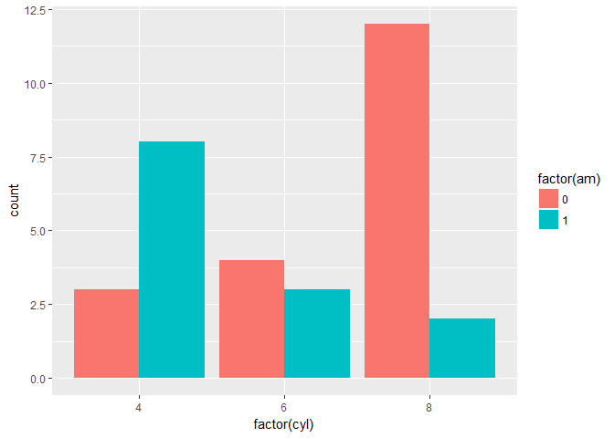
# clean up the axes with scale_ functions
val = c('#E41A1C', '#377EB8')
lab = c('Manual', 'Automatic')
cyl.am + geom_bar(position = 'dodge', ) +
scale_x_discrete('Cylinders') +
scale_y_continuous('Number') +
scale_fill_manual('Transmission', values = val, labels = lab)
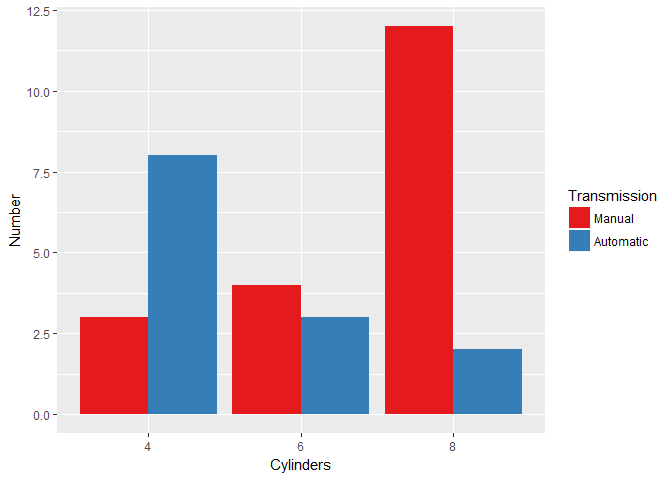
Setting a dummy aesthetic
# add a new column called group
mtcars$group <- 0
# create jittered plot of mtcars: mpg onto x, group onto y
ggplot(mtcars, aes(x = mpg, y = group)) + geom_jitter()

# change the y aesthetic limits
ggplot(mtcars, aes(x = mpg, y = group)) +
geom_jitter() +
scale_y_continuous(limits = c(-2, 2))
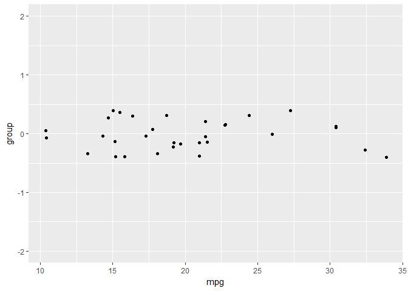
Overplotting 1 - Point shape and transparency
# basic scatter plot: wt on x-axis and mpg on y-axis; map cyl to col
ggplot(mtcars, aes(x = wt, y = mpg, col = cyl)) +
geom_point(size = 4)

# hollow circles - an improvement
ggplot(mtcars, aes(x = wt, y = mpg, col = cyl)) +
geom_point(size = 4, shape = 1)

# add transparency - very nice
ggplot(mtcars, aes(x = wt, y = mpg, col = cyl)) +
geom_point(size = 4, shape = 1, alpha = 0.6)

Overplotting 2 - alpha with large datasets
# scatter plot: carat (x), price (y), clarity (col)
ggplot(diamonds, aes(x = Carat, y = PricePerCt, col = Clarity)) +
geom_point()
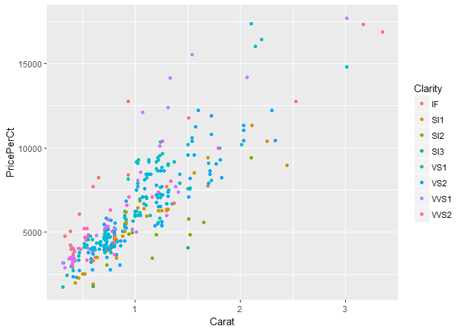
# adjust for overplotting
ggplot(diamonds, aes(x = Carat, y = PricePerCt, col = Clarity)) +
geom_point(alpha = 0.5)
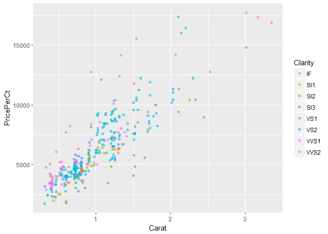
# scatter plot: clarity (x), carat (y), price (col)
ggplot(diamonds, aes(x = Clarity, y = Carat, col = PricePerCt)) +
geom_point(alpha = 0.5)
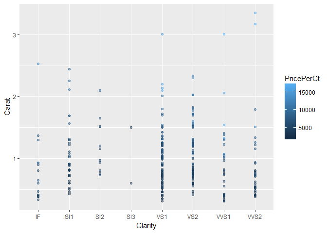
# dot plot with jittering
ggplot(diamonds, aes(x = Clarity, y = Carat, col = PricePerCt)) +
geom_point(alpha = 0.5, position = 'jitter')
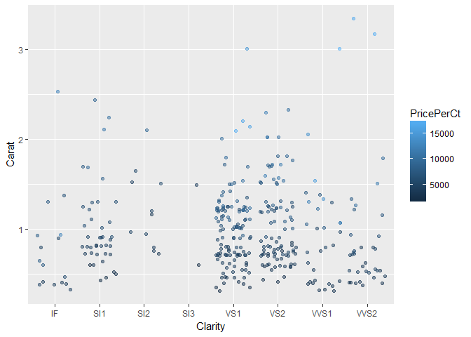
Geometries¶
Scatter plots and jittering (1)
# plot the cyl on the x-axis and wt on the y-axis
ggplot(mtcars, aes(x = cyl, y = wt)) +
geom_point()
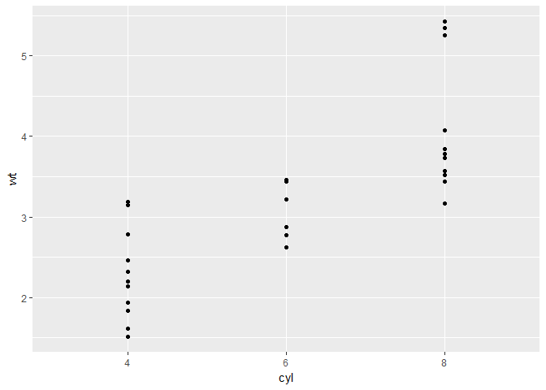
# Use geom_jitter() instead of geom_point()
ggplot(mtcars, aes(x = cyl, y = wt)) +
geom_jitter()
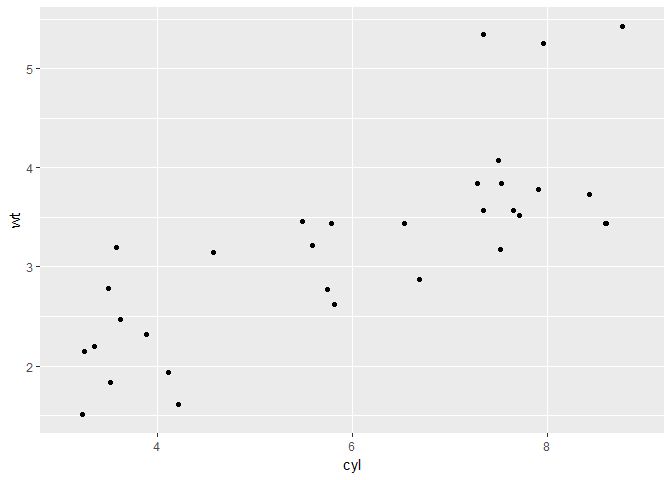
# Define the position object using position_jitter(): posn.j
posn.j <- position_jitter(0.1)
# Use posn.j in geom_point()
ggplot(mtcars, aes(x = cyl, y = wt)) +
geom_point(position = posn.j)
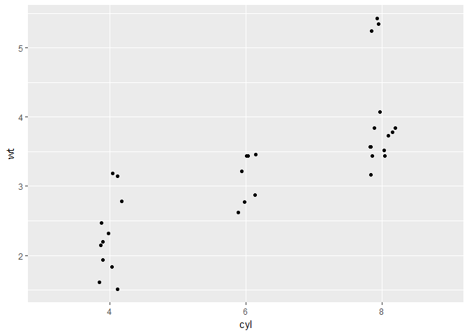
Scatter plots and jittering (2)
# scatter plot of vocabulary (y) against education (x). Use geom_point()
ggplot(Vocab, aes(x = education, y = vocabulary)) +
geom_point()

# use geom_jitter() instead of geom_point()
ggplot(Vocab, aes(x = education, y = vocabulary)) +
geom_jitter()
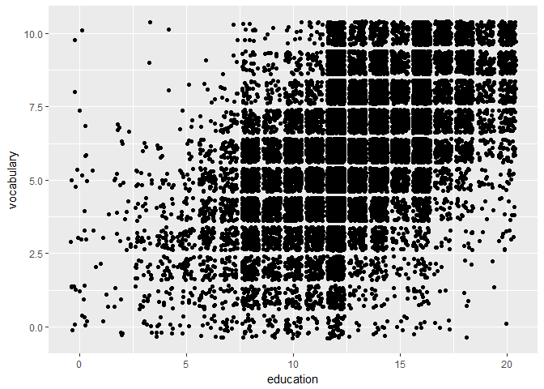
# set alpha to a very low 0.2
ggplot(Vocab, aes(x = education, y = vocabulary)) +
geom_jitter(alpha = 0.2)
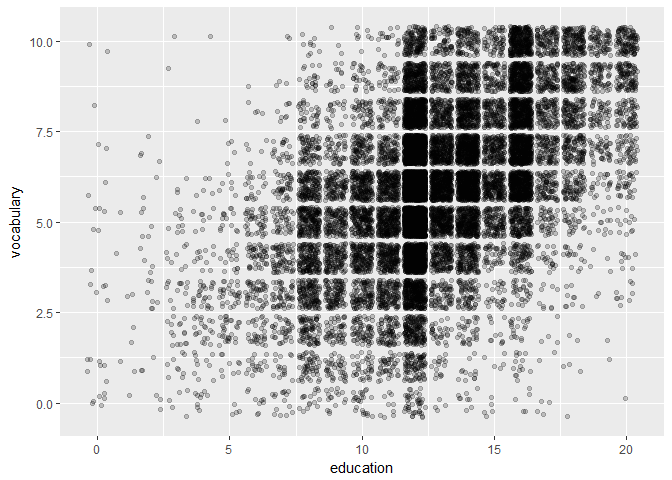
# set the shape to 1
ggplot(Vocab, aes(x = education, y = vocabulary)) +
geom_jitter(alpha = 0.2, shape = 1)
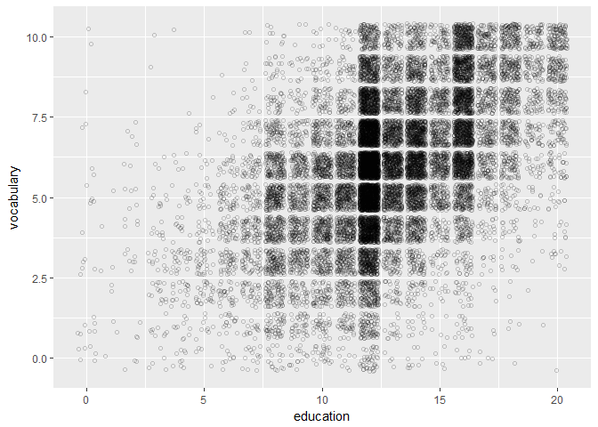
Histograms
# univariate histogram
ggplot(mtcars, aes(x = mpg)) +
geom_histogram()

# change the bin width to 1
ggplot(mtcars, aes(x = mpg)) +
geom_histogram(binwidth = 1)

# change the y aesthetic to density
ggplot(mtcars, aes(x = mpg)) +
geom_histogram(aes(y = ..density..), binwidth = 1)
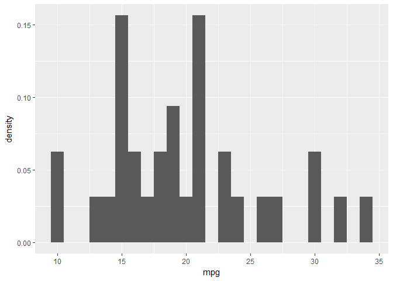
# custom color code
myBlue <- '#377EB8'
# Change the fill color to myBlue
ggplot(mtcars, aes(x = mpg)) +
geom_histogram(aes(y = ..density..), binwidth = 1, fill = myBlue)
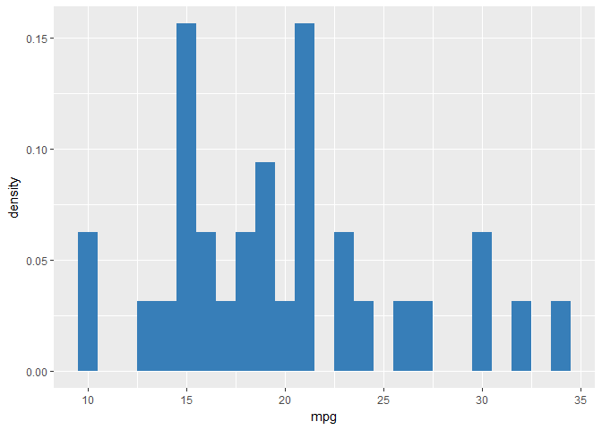
Position
mtcars$am <- as.factor(mtcars$am)
# bar plot of cyl, filled according to am
ggplot(mtcars, aes(x = cyl, fill = am)) +
geom_bar()
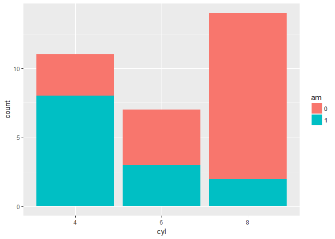
# change the position argument to stack
ggplot(mtcars, aes(x = cyl, fill = am)) +
geom_bar(position = 'stack')

# change the position argument to fill
ggplot(mtcars, aes(x = cyl, fill = am)) +
geom_bar(position = 'fill')
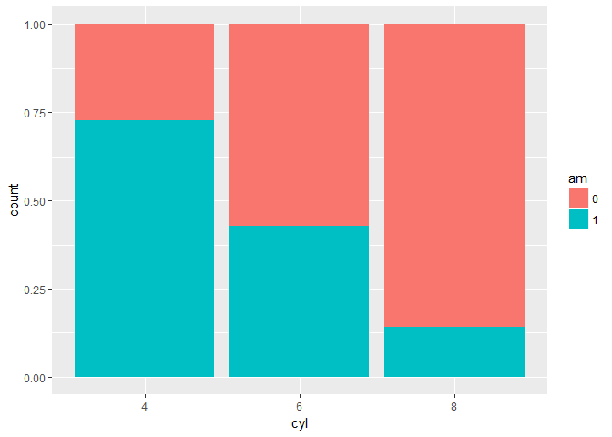
# change the position argument to dodge
ggplot(mtcars, aes(x = cyl, fill = am)) +
geom_bar(position = 'dodge')

Overlapping bar plots
# bar plot of cyl, filled according to am
ggplot(mtcars, aes(x = cyl, fill = am)) +
geom_bar()

# change the position argument to 'dodge'
ggplot(mtcars, aes(x = cyl, fill = am)) +
geom_bar(position = 'dodge')

# define posn_d with position_dodge()
posn_d <- position_dodge(0.2)
# change the position argument to posn_d
ggplot(mtcars, aes(x = cyl, fill = am)) +
geom_bar(position = posn_d)
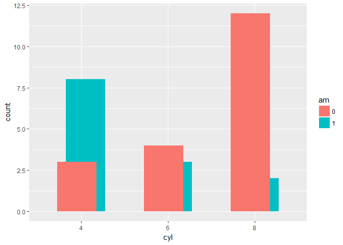
# use posn_d as position and adjust alpha to 0.6
ggplot(mtcars, aes(x = cyl, fill = am)) +
geom_bar(position = posn_d, alpha = 0.6)
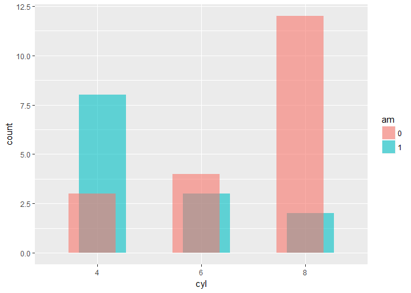
Overlapping histograms
# histogram, add coloring defined by cyl
ggplot(mtcars, aes(mpg, fill = cyl)) +
geom_histogram(binwidth = 1)

# change position to identity
ggplot(mtcars, aes(mpg, fill = cyl)) +
geom_histogram(binwidth = 1, position = 'identity')

# change geom to freqpoly (position is identity by default)
ggplot(mtcars, aes(mpg, col = cyl)) +
geom_freqpoly(binwidth = 1)

Facets or splom histograms
# load the package
library(reshape2)
# load new data
data(uniranks, package = 'GDAdata')
# name the variables
names(uniranks)[c(5, 6, 8, 8, 10, 11, 13)] <- c('AvTeach', 'NSSTeach', 'SpendperSt', 'StudentStaffR', 'Careers', 'VAddScore', 'NSSFeedb')
# reshape the data frame
ur2 <- melt(uniranks[, c(3, 5:13)], id.vars = 'UniGroup', variable.name = 'uniV', value.name = 'uniX')
# Splom
ggplot(ur2, aes(uniX)) +
geom_histogram() +
xlab('') +
ylab('') +
facet_grid(UniGroup ~ uniV, scales = 'free_x')
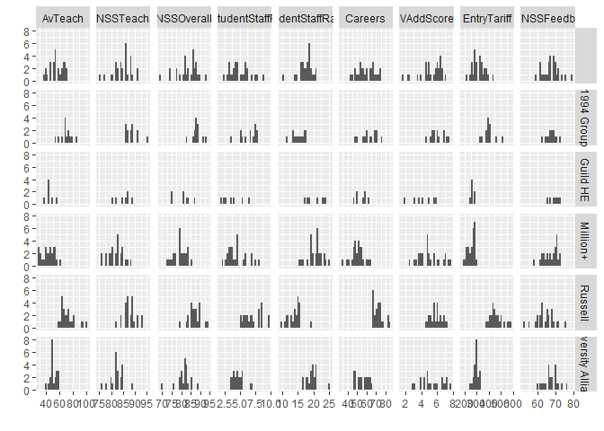
library(ggplot2)
library(gridExtra)
data(Pima.tr2, package = 'MASS')
h1 <- ggplot(Pima.tr2, aes(glu)) + geom_histogram()
h2 <- ggplot(Pima.tr2, aes(bp)) + geom_histogram()
h3 <- ggplot(Pima.tr2, aes(skin)) + geom_histogram()
h4 <- ggplot(Pima.tr2, aes(bmi)) + geom_histogram()
h5 <- ggplot(Pima.tr2, aes(ped)) + geom_histogram()
h6 <- ggplot(Pima.tr2, aes(age)) + geom_histogram()
grid.arrange(h1, h2, h3, h4, h5, h6, nrow = 2)

Bar plots with color ramp, part 1
# Example of how to use a brewed color palette
ggplot(mtcars, aes(x = cyl, fill = am)) +
geom_bar() +
scale_fill_brewer(palette = 'Set1')
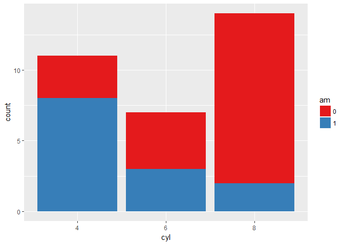
Vocab$education <- as.factor(Vocab$education)
Vocab$vocabulary <- as.factor(Vocab$vocabulary)
# Plot education on x and vocabulary on fill
# Use the default brewed color palette
ggplot(Vocab, aes(x = education, fill = vocabulary)) + geom_bar(position = 'fill') + scale_fill_brewer(palette = 'Set3')
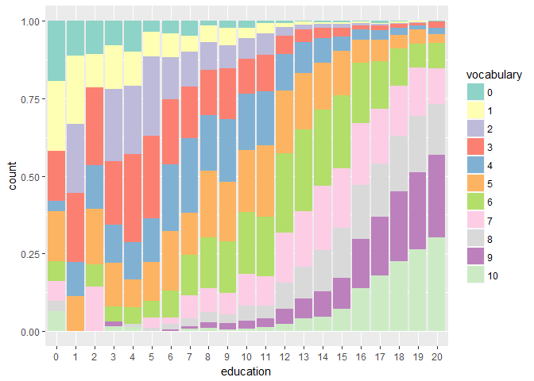
Bar plots with color ramp, part 2
# Definition of a set of blue colors
blues <- brewer.pal(9, 'Blues')
# Make a color range using colorRampPalette() and the set of blues
blue_range <- colorRampPalette(blues)
# Use blue_range to adjust the color of the bars, use scale_fill_manual()
ggplot(Vocab, aes(x = education, fill = vocabulary)) +
geom_bar(position = 'fill') +
scale_fill_manual(values = blue_range(11))
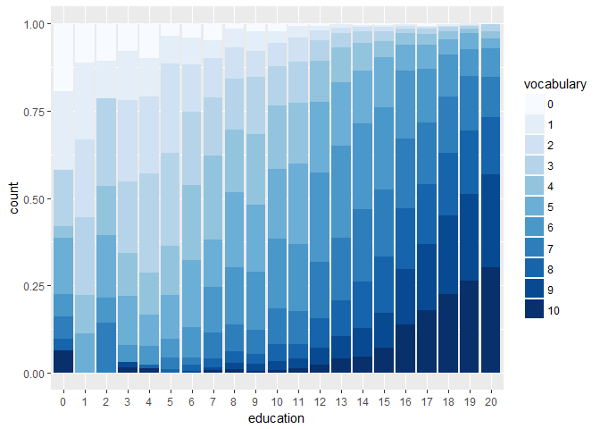
Overlapping histograms (2)
# histogram
ggplot(mtcars, aes(mpg)) + geom_histogram(binwidth = 1)

# expand the histogram to fill using am
ggplot(mtcars, aes(mpg, fill = am)) +
geom_histogram(binwidth = 1)
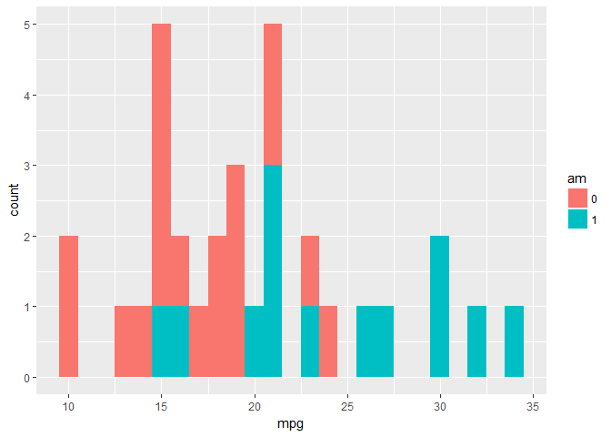
# change the position argument to 'dodge'
ggplot(mtcars, aes(mpg, fill = am)) +
geom_histogram(position = 'dodge', binwidth = 1)

# change the position argument to 'fill'
ggplot(mtcars, aes(mpg, fill = am)) +
geom_histogram(position = 'fill', binwidth = 1)
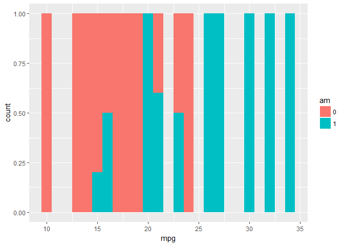
# change the position argument to 'identity' and set alpha to 0.4
ggplot(mtcars, aes(mpg, fill = am)) +
geom_histogram(position = 'identity', binwidth = 1, alpha = 0.4)
# change fill to cyl
ggplot(mtcars, aes(mpg, fill = cyl)) +
geom_histogram(position = 'identity', binwidth = 1, alpha = 0.4)
Line plots
# plot unemploy as a function of date using a line plot
ggplot(economics, aes(x = date, y = unemploy)) +
geom_line()

# adjust plot to represent the fraction of total population that is unemployed
ggplot(economics, aes(x = date, y = unemploy/pop)) +
geom_line()

Periods of recession
# draw the recess periods
ggplot(economics, aes(x = date, y = unemploy/pop)) +
geom_line() +
geom_rect(data = recess, inherit.aes = FALSE, aes(xmin = begin, xmax = end, ymin = -Inf, ymax = +Inf), fill = 'red', alpha = 0.2)
Multiple time series, part 1
# use gather to go from fish to fish.tidy.
fish.tidy <- gather(fish, Species, Capture, -Year)
Multiple time series, part 2
# plot
ggplot(fish.tidy, aes(x = Year, y = Capture, col = Species)) +
geom_line()
qplot and wrap-up¶
Using qplot
# the old way
plot(mpg ~ wt, data = mtcars)
# using ggplot
ggplot(mtcars, aes(x = wt, y = mpg)) +
geom_point(shape = 1)
# Using qplot
qplot(wt, mpg, data = mtcars)
Using aesthetics
# Categorical: cyl
qplot(wt, mpg, data = mtcars, size = cyl)

# gear
qplot(wt, mpg, data = mtcars, size = gear)

# Continuous: hp
qplot(wt, mpg, data = mtcars, col = hp)

# qsec
qplot(wt, mpg, data = mtcars, size = qsec)

Choosing geoms, part 1
# qplot() with x only
qplot(factor(cyl), data = mtcars)
# qplot() with x and y
qplot(factor(cyl), factor(vs), data = mtcars)
# qplot() with geom set to jitter manually
qplot(factor(cyl), factor(vs), data = mtcars, geom = 'jitter')

Choosing geoms, part 2 - dotplot
# make a dot plot with ggplot
ggplot(mtcars, aes(cyl, wt, fill = am)) +
geom_dotplot(stackdir = 'center', binaxis = 'y')
# qplot with geom 'dotplot', binaxis = 'y' and stackdir = 'center'
qplot(as.numeric(cyl), wt, data = mtcars, fill = am, geom = 'dotplot', stackdir = 'center', binaxis = 'y')
Chicken weight
# base
ggplot(ChickWeight, aes(x = Time, y = weight)) +
geom_line(aes(group = Chick))
# color
ggplot(ChickWeight, aes(x = Time, y = weight, col = Diet)) +
geom_line(aes(group = Chick))

# lines
ggplot(ChickWeight, aes(x = Time, y = weight, col = Diet)) +
geom_line(aes(group = Chick), alpha = 0.3) +
geom_smooth(lwd = 2, se = FALSE)
Titanic
# Use ggplot() for the first instruction
ggplot(titanic, aes(x = factor(Pclass), fill = factor(Sex))) +
geom_bar(position = 'dodge')
# Use ggplot() for the second instruction
ggplot(titanic, aes(x = factor(Pclass), fill = factor(Sex))) +
geom_bar(position = 'dodge') +
facet_grid('. ~ Survived')
# position jitter
posn.j <- position_jitter(0.5, 0)
# Use ggplot() for the last instruction
ggplot(titanic, aes(x = factor(Pclass), y = Age, col = factor(Sex))) +
geom_jitter(size = 3, alpha = 0.5, position = posn.j) +
facet_grid('. ~ Survived')
SECTION 2¶
Statistics¶
Smoothing
# scatter plot with LOESS smooth with a CI ribbon
ggplot(mtcars, aes(x = wt, y = mpg)) +
geom_point() +
geom_smooth()
# scatter plot with LOESS smooth without CI
ggplot(mtcars, aes(x = wt, y = mpg)) +
geom_point() +
geom_smooth(se = FALSE)
# scatter plot with an OLS linear model
ggplot(mtcars, aes(x = wt, y = mpg)) +
geom_point() +
geom_smooth(method = 'lm')

# scatter plot with an OLS linear model without points
ggplot(mtcars, aes(x = wt, y = mpg)) +
geom_smooth(method = 'lm', se = FALSE)
Grouping variables
# cyl as a factor variable
ggplot(mtcars, aes(x = wt, y = mpg, col = factor(cyl))) +
geom_point() +
stat_smooth(method = 'lm', se = FALSE)
# set the group aesthetic
ggplot(mtcars, aes(x = wt, y = mpg, col = factor(cyl), group = 1)) +
geom_point() +
stat_smooth(method = 'lm', se = F)
# add a second smooth layer in which the group aesthetic is set
ggplot(mtcars, aes(x = wt, y = mpg, col = factor(cyl))) +
geom_point() +
stat_smooth(method = 'lm', se = FALSE) +
stat_smooth(method = 'lm', se = FALSE, aes(group = 1))
Modifying stat_smooth
# change the LOESS span
ggplot(mtcars, aes(x = wt, y = mpg)) +
geom_point() +
geom_smooth(se = FALSE, span = 0.7, method = 'auto')
# method = 'auto' is by default
# set the model to the default LOESS and use a span of 0.7
ggplot(mtcars, aes(x = wt, y = mpg, col = factor(cyl))) +
geom_point() +
stat_smooth(method = 'lm', se = FALSE) +
stat_smooth(method = 'auto', se = FALSE, aes(group = 1), col = 'black', span = 0.7)
# set col to 'All', inside the aes layer
ggplot(mtcars, aes(x = wt, y = mpg, col = factor(cyl))) +
geom_point() +
stat_smooth(method = 'lm', se = FALSE) +
stat_smooth(method = 'auto', se = FALSE, aes(group = 1, col = 'All cyl'), span = 0.7)

# add `scale_color_manual` to change the colors
myColors <- c(brewer.pal(3, 'Dark2'), 'black')
ggplot(mtcars, aes(x = wt, y = mpg, col = factor(cyl))) +
geom_point() +
stat_smooth(method = 'lm', se = FALSE) +
stat_smooth(method = 'auto', se = FALSE, aes(group = 1, col = 'All cyl'), span = 0.7) +
scale_color_manual('Cylinders', values = myColors)
Modifying stat_smooth (2)
# jittered scatter plot, add a linear model (lm) smooth
ggplot(Vocab, aes(x = education, y = vocabulary)) +
geom_jitter(alpha = 0.2) +
stat_smooth(method = 'lm', se = FALSE)
# only lm, colored by year
ggplot(Vocab, aes(x = education, y = vocabulary, col = factor(year))) +
stat_smooth(method = 'lm', se = FALSE)
# set a color brewer palette
ggplot(Vocab, aes(x = education, y = vocabulary, col = factor(year))) +
stat_smooth(method = 'lm', se = FALSE) +
scale_color_brewer('Accent')

# change col and group, specify alpha, size and geom, and add scale_color_gradient
ggplot(Vocab, aes(x = education, y = vocabulary, col = year, group = factor(year))) +
stat_smooth(method = 'lm', se = FALSE, alpha = 0.6, size = 2, geom = 'path') +
scale_color_brewer('Blues') +
scale_color_gradientn(colors = brewer.pal(9, 'YlOrRd'))

Quantiles
# use stat_quantile instead of stat_smooth
ggplot(Vocab, aes(x = education, y = vocabulary, col = year, group = factor(year))) + stat_quantile(alpha = 0.6, size = 2) +
scale_color_gradientn(colors = brewer.pal(9,'YlOrRd'))
# set quantile to 0.5
ggplot(Vocab, aes(x = education, y = vocabulary, col = year, group = factor(year))) +
stat_quantile(alpha = 0.6, size = 2, quantiles = c(0.5)) +
scale_color_gradientn(colors = brewer.pal(9,'YlOrRd'))
Sum
# plot with linear and loess model
p <- ggplot(Vocab, aes(x = education, y = vocabulary)) +
stat_smooth(method = 'loess', aes(col = 'red'), se = F) +
stat_smooth(method = 'lm', aes(col = 'blue'), se = F) +
scale_color_discrete('Model', labels = c('red' = 'LOESS', 'blue' = 'lm'))
p

# add stat_sum (by overall proportion)
p +
stat_sum()

#aes(group = 1)
# set size range
p +
stat_sum() +
scale_size(range = c(1,10))
# proportional within years of education; set group aesthetic
p +
stat_sum(aes(group = education))
# set the n
p +
stat_sum(aes(group = education, size = ..n..))

Preparations
# convert cyl and am to factors
mtcars$cyl <- as.factor(mtcars$cyl)
mtcars$am <- as.factor(mtcars$am)
# define positions
posn.d <- position_dodge(width = 0.1)
posn.jd <- position_jitterdodge(jitter.width = 0.1, dodge.width = 0.2)
posn.j <- position_jitter(width = 0.2)
# base layers
wt.cyl.am <- ggplot(mtcars, aes(x = cyl, y = wt, col = am, group = am, fill = am))
Plotting variations
# base layer
wt.cyl.am <- ggplot(mtcars, aes(x = cyl, y = wt, col = am, fill = am, group = am))
# jittered, dodged scatter plot with transparent points
wt.cyl.am +
geom_point(position = posn.jd, alpha = 0.6)

# mean and sd
wt.cyl.am +
geom_point(position = posn.jd, alpha = 0.6) + stat_summary(fun.data = mean_sdl, fun.args = list(mult = 1), position = posn.d)
# mean and 95% CI
wt.cyl.am +
geom_point(position = posn.jd, alpha = 0.6) +
stat_summary(fun.data = mean_cl_normal, position = posn.d)
# mean and SD with T-tipped error bars
wt.cyl.am +
geom_point(position = posn.jd, alpha = 0.6) +
stat_summary(geom = 'point', fun.y = mean, position = posn.d) +
stat_summary(geom = 'errorbar', fun.data = mean_sdl, fun.args = list(mult = 1), width = 0.1, position = posn.d)

Coordinates and Facets¶
Zooming In
# basic
p <- ggplot(mtcars, aes(x = wt, y = hp, col = am)) +
geom_point() +
geom_smooth()
# add scale_x_continuous
p +
scale_x_continuous(limits = c(3, 6), expand = c(0,0))

# zoom in
p +
coord_cartesian(xlim = c(3, 6))

Aspect Ratio
# scatter plot
base.plot <- ggplot(iris, aes(y = Sepal.Width, x = Sepal.Length, col = Species)) +
geom_jitter() +
geom_smooth(method = 'lm', se = FALSE)
# default aspect ratio
# fix aspect ratio (1:1)
base.plot +
coord_equal()
base.plot +
coord_fixed()
Pie Charts
# stacked bar plot
thin.bar <- ggplot(mtcars, aes(x = 1, fill = cyl)) +
geom_bar()
thin.bar
# convert thin.bar to pie chart
thin.bar +
coord_polar(theta = 'y')
# create stacked bar plot
wide.bar <- ggplot(mtcars, aes(x = 1, fill = cyl)) +
geom_bar(width = 1)
wide.bar

# Convert wide.bar to pie chart
wide.bar + coord_polar(theta = 'y')

Facets: the basics
# scatter plot
p <- ggplot(mtcars, aes(x = wt, y = mpg)) + geom_point()
# separate rows according am
# facet_grid(rows ~ cols)
p +
facet_grid(am ~ .)

# separate columns according to cyl
# facet_grid(rows ~ cols)
p + facet_grid(. ~ cyl)

# separate by both columns and rows
# facet_grid(rows ~ cols)
p +
facet_grid(am ~ cyl)
Many variables
# create the `cyl_am` col and `myCol` vector
mtcars$cyl_am <- paste(mtcars$cyl, mtcars$am, sep = '_')
myCol <- rbind(brewer.pal(9, 'Blues')[c(3,6,8)],
brewer.pal(9, 'Reds')[c(3,6,8)])
# scatter plot, add color scale
ggplot(mtcars, aes(x = wt, y = mpg, col = cyl_am)) +
geom_point() +
scale_color_manual(values = myCol)
# facet according on rows and columns
ggplot(mtcars, aes(x = wt, y = mpg, col = cyl_am)) +
geom_point() +
scale_color_manual(values = myCol) +
facet_grid(gear ~ vs)

# add more variables
ggplot(mtcars, aes(x = wt, y = mpg, col = cyl_am, size = disp)) +
geom_point() +
scale_color_manual(values = myCol) +
facet_grid(gear ~ vs)

Dropping levels
# scatter plot
ggplot(mamsleep, aes(x = time, y = name, col = sleep)) +
geom_point()

# facet rows according to `vore`
ggplot(mamsleep, aes(x = time, y = name, col = sleep)) +
geom_point() +
facet_grid(vore ~ .)
# specify scale and space arguments to free up rows
ggplot(mamsleep, aes(x = time, y = name, col = sleep)) +
geom_point() +
facet_grid(vore ~ ., scale = 'free_y', space = 'free_y')

Themes¶
Rectangles
# separate columns according to cyl
# facet_grid(rows ~ cols)
mtcars$cyl <- c(6, 6, 4, 6, 8, 6, 8, 4, 4, 6, 6, 8, 8, 8, 8, 8, 8, 4, 4, 4, 4, 8, 8, 8, 8, 4, 4, 4, 8, 6, 8, 4)
mtcars$Cylinders <- factor(mtcars$cyl)
z <- ggplot(mtcars, aes(x = wt, y = mpg, col = Cylinders)) +
geom_point(size = 2, alpha = 0.7) +
facet_grid(. ~ cyl) +
labs(x = 'Weight (lb/1000)', y = 'Miles/(US) gallon') +
geom_smooth(method = 'lm', se = FALSE) +
theme_base() +
scale_colour_economist()
z

# change the plot background color to myPink (#FEE0D2)
myPink <- '#FEE0D2'
z +
theme(plot.background = element_rect(fill = myPink))
# adjust the border to be a black line of size 3
z +
theme(plot.background = element_rect(fill = myPink, color = 'black', size = 3))
# adjust the border to be a black line of size 3
z +
theme(plot.background = element_rect(color = 'black', size = 3))
# set panel.background, legend.key, legend.background and strip.background to element_blank()
z +
theme(plot.background = element_rect(fill = myPink, color = 'black', size = 3), panel.background = element_blank(), legend.key = element_blank(), legend.background = element_blank(), strip.background = element_blank())
Lines
# Extend z with theme() and three arguments
z +
theme(panel.grid = element_blank(), axis.line = element_line(color = 'black'), axis.ticks = element_line(color = 'black'))
Text
# extend z with theme() function and four arguments
myRed <- '#99000D'
z +
theme(strip.text = element_text(size = 16, color = myRed), axis.title.x = element_text(color = myRed, hjust = 0, face = 'italic'), axis.title.y = element_text(color = myRed, hjust = 0, face = 'italic'), axis.text = element_text(color = 'black'))

Legends
# move legend by position
z +
theme(legend.position = c(0.85, 0.85))
# change direction
z +
theme(legend.direction = 'horizontal')
# change location by name
z +
theme(legend.position = 'bottom')
# remove legend entirely
z +
theme(legend.position = 'none')
Positions
# increase spacing between facets
z +
theme(panel.margin.x = unit(2, 'cm'))

# add code to remove any excess plot margin space
z +
theme(panel.margin.x = unit(2, 'cm'), plot.margin = unit(c(0,0,0,0), 'cm'))
Update Themestheme update
# theme layer saved as an object, theme_pink
theme_pink <- theme(panel.background = element_blank(), legend.key = element_blank(), legend.background = element_blank(), strip.background = element_blank(), plot.background = element_rect(fill = myPink, color = 'black', size = 3), panel.grid = element_blank(), axis.line = element_line(color = 'black'), axis.ticks = element_line(color = 'black'), strip.text = element_text(size = 16, color = myRed), axis.title.y = element_text(color = myRed, hjust = 0, face = 'italic'), axis.title.x = element_text(color = myRed, hjust = 0, face = 'italic'), axis.text = element_text(color = 'black'), legend.position = 'none')
z2 <- z
# apply theme_pink to z2
z2 +
theme_pink

# change code so that old theme is saved as old
old <- theme_update(panel.background = element_blank(), legend.key = element_blank(), legend.background = element_blank(), strip.background = element_blank(), plot.background = element_rect(fill = myPink, color = 'black', size = 3), panel.grid = element_blank(),axis.line = element_line(color = 'black'), axis.ticks = element_line(color = 'black'), strip.text = element_text(size = 16, color = myRed), axis.title.y = element_text(color = myRed, hjust = 0, face = 'italic'), axis.title.x = element_text(color = myRed, hjust = 0, face = 'italic'), axis.text = element_text(color = 'black'), legend.position = 'none')
# display the plot z2
theme_set(theme_pink)
z2 +
theme_pink
# restore the old plot
theme_set(old)
z2

Exploring ggthemes
# apply theme_tufte
# set the theme with theme_set
theme_set(theme_tufte())
# or apply it in the ggplot command
z2 +
theme_tufte()
# apply theme_tufte, modified
# set the theme with theme_set
theme_set(theme_tufte() +
theme(legend.position = c(0.9, 0.9), axis.title = element_text(face = 'italic', size = 12), legend.title = element_text(face = 'italic', size = 12)))
# or apply it in the ggplot command
z2 +
theme_tufte() +
theme(legend.position = c(0.9, 0.9), axis.title = element_text(face = 'italic', size = 12), legend.title = element_text(face = 'italic', size = 12))
# apply theme_igray
# set the theme with `theme_set`
theme_set(theme_igray())
# or apply it in the ggplot command
z2 +
theme_igray()
# apply `theme_igray`, modified
# set the theme with `theme_set`
theme_set(theme_igray() +
theme(legend.position = c(0.9, 0.9), legend.key = element_blank(), legend.background = element_rect(fill = 'grey90')))
z2 +
# Or apply it in the ggplot command
theme_igray() +
theme(legend.position = c(0.9, 0.9),
legend.key = element_blank(),
legend.background = element_rect(fill = 'grey90'))
Best Practices¶
Bar Plots (1)
# base layers
m <- ggplot(mtcars, aes(x = cyl, y = wt))
# dynamite plot
m +
stat_summary(fun.y = mean, geom = 'bar', fill = 'skyblue') + stat_summary(fun.data = mean_sdl, fun.args = list(mult = 1), geom = 'errorbar', width = 0.1)
Bar Plots (2)
# base layers
m <- ggplot(mtcars, aes(x = cyl,y = wt, col = am, fill = am))
# dynamite plot
m +
stat_summary(fun.y = mean, geom = 'bar') + stat_summary(fun.data = mean_sdl, fun.args = list(mult = 1), geom = 'errorbar', width = 0.1)

# set position dodge in each `stat` function
m +
stat_summary(fun.y = mean, geom = 'bar', position = 'dodge') + stat_summary(fun.data = mean_sdl, fun.args = list(mult = 1), geom = 'errorbar', width = 0.1, position = 'dodge')
# set your dodge `posn` manually
posn.d <- position_dodge(0.9)
# redraw dynamite plot
m +
stat_summary(fun.y = mean, geom = 'bar', position = posn.d) + stat_summary(fun.data = mean_sdl, fun.args = list(mult = 1), geom = 'errorbar', width = 0.1, position = posn.d)

Bar Plots (3)
# base layers
mtcars.cyl <- mtcars %>% group_by(cyl) %>% summarise(wt.avg = mean(wt))
mtcars.cyl
1 2 3 4 5 6 | |
m <- ggplot(mtcars.cyl, aes(x = cyl, y = wt.avg))
m
# draw bar plot
m +
geom_bar(stat = 'identity', fill = 'skyblue')

Pie Charts (1)
# bar chart to pie chart
ggplot(mtcars, aes(x = cyl, fill = am)) + geom_bar(position = 'fill')
ggplot(mtcars, aes(x = cyl, fill = am)) + geom_bar(position = 'fill') + facet_grid(. ~ cyl)

ggplot(mtcars, aes(x = factor(1), fill = am)) + geom_bar(position = 'fill') + facet_grid(. ~ cyl)

ggplot(mtcars, aes(x = factor(1), fill = am)) + geom_bar(position = 'fill') + facet_grid(. ~ cyl) + coord_polar(theta = 'y')
ggplot(mtcars, aes(x = factor(1), fill = am)) + geom_bar(position = 'fill', width = 1) + facet_grid(. ~ cyl) + coord_polar(theta = 'y')

Parallel coordinate plot
# parallel coordinates plot using `GGally`
# all columns except `am` (`am` column is the 9th)
group_by_am <- 9
my_names_am <- (1:11)[-group_by_am]
# parallel plot; each variable plotted as a z-score transformation
ggparcoord(mtcars, columns = my_names_am, groupColumn = group_by_am, alpha = 0.8)
# scaled between 0-1 and most discriminating variable first
ggparcoord(mtcars, columns = my_names_am, groupColumn = group_by_am, alpha = 0.8, scale = 'uniminmax', order = 'anyClass')
ggparcoord(iris, columns = 1:4, groupColumn = 'Species') # xlab, ylab, scale_x_discrete, them

ggparcoord(iris, columns = 1:4, groupColumn = 'Species', scale = 'uniminmax')
ggparcoord(iris, columns = 1:4, groupColumn = 'Species', scale = 'globalminmax')
ggparcoord(iris, columns = 1:4, groupColumn = 'Species', mapping = aes(size = 1))
ggparcoord(iris, columns = 1:4, groupColumn = 'Species', alphaLines = 0.3)
ggparcoord(iris, columns = 1:4, groupColumn = 'Species', scale = 'center')
ggparcoord(iris, columns = 1:4, groupColumn = 'Species', scaleSummary = 'median', missing = 'exclude')

ggparcoord(iris, columns = 1:4, groupColumn = 'Species', order = 'allClass') # or custom filter

ggparcoord(iris, columns = 1:4, groupColumn = 'Species', scale = 'std')
Splom
library(dplyr)
data(Pima.tr2, package = 'MASS')
PimaV <- select(Pima.tr2, glu:age)
ggpairs(PimaV, diag = list(continuous = 'density'), axisLabels = 'show')

Heat Maps
# create color palette
myColors <- brewer.pal(9, 'Reds')
# heat map
ggplot(barley, aes(x = year, y = variety, fill = yield)) +
geom_tile()

# add facet_wrap(~ variable); not like facet_grid(. ~ variable)
ggplot(barley, aes(x = year, y = variety, fill = yield)) +
geom_tile() +
facet_wrap( ~ site, ncol = 1)
#
ggplot(barley, aes(x = year, y = variety, fill = yield)) + geom_tile() + facet_wrap( ~ site, ncol = 1) +
scale_fill_gradientn(colors = myColors)
Heat Maps Alternatives (1)
# line plots
ggplot(barley, aes(x = year, y = yield, col = variety, group = variety)) + geom_line() +
facet_wrap(facets = ~ site, nrow = 1)

Heat Maps Alternatives (2)
# overlapping ribbon plot
ggplot(barley, aes(x = year, y = yield, col = site, group = site, fill = site)) + geom_line() +
stat_summary(fun.y = mean, geom = 'line') +
stat_summary(fun.data = mean_sdl, fun.args = list(mult = 1), geom = 'ribbon', col = NA, alpha = 0.1)
Case Study¶
Sort and order
# reorder
data(Cars93, package = 'MASS')
Cars93 <- within(Cars93, TypeWt <- reorder(Type, Weight, mean))
Cars93 <- within(Cars93, Type1 <- factor(Type, levels = c('Small', 'Sporty', 'Compact', 'Midsize', 'Large', 'Van')))
with(Cars93, table(TypeWt, Type1))
1 2 3 4 5 6 7 8 | |
ggplot(Cars93, aes(TypeWt, 100/MPG.city)) +
geom_boxplot() +
ylab('Gallons per 100 miles') +
xlab('Car type')

Cars93 <- within(Cars93, {
levels(Type1) <- c('Small', 'Large', 'Midsize', 'Small', 'Sporty', 'Large')
})
ggplot(Cars93, aes(TypeWt, 100/MPG.city)) +
geom_boxplot() +
ylab('Gallons per 100 miles') +
xlab('Car type')

Ensemble plots
library(gridExtra)
data(Fertility, package = 'AER')
p0 <- ggplot(Fertility) + geom_histogram(binwidth = 1) + ylab('')
p1 <- p0 + aes(x = age)
p2 <- p0 + aes(x = work) + xlab('Weeks worked in 1979')
k <- ggplot(Fertility) +
geom_bar() + ylab('') +
ylim(0, 250000)
p3 <- k + aes(x = morekids) +
xlab('has more children')
p4 <- k + aes(x = gender1) +
xlab('first child')
p5 <- k + aes(x = gender2) +
xlab('second child')
p6 <- k + aes(x = afam) +
xlab('African-American')
p7 <- k + aes(x = hispanic) +
xlab('Hispanic')
p8 <- k + aes(x = other) +
xlab('other race')
grid.arrange(arrangeGrob(p1, p2, ncol = 2, widths = c(3, 3)), arrangeGrob(p3, p4, p5, p6, p7, p8, ncol = 6), nrow = 2, heights = c(1.25, 1))
Exploring Data
# histogram
ggplot(adult, aes(x = SRAGE_P)) +
geom_histogram()
# histogram
ggplot(adult, aes(x = BMI_P)) +
geom_histogram()

# color, default binwidth
ggplot(adult,aes(x = SRAGE_P, fill = factor(RBMI))) +
geom_histogram(binwidth = 1)
Data Cleaning
# remove individual aboves 84
adult <- adult[adult$SRAGE_P <= 84, ]
# remove individuals with a BMI below 16 and above or equal to 52
adult <- adult[adult$BMI_P >= 16 & adult$BMI_P < 52, ]
# relabel race
adult$RACEHPR2 <- factor(adult$RACEHPR2, labels = c('Latino', 'Asian', 'African American', 'White'))
# relabel the BMI categories variable
adult$RBMI <- factor(adult$RBMI, labels = c('Under-weight', 'Normal-weight', 'Over-weight', 'Obese'))
Multiple Histograms
# color palette BMI_fill
BMI_fill <- scale_fill_brewer('BMI Category', palette = 'Reds')
# histogram, add BMI_fill and customizations
ggplot(adult, aes(x = SRAGE_P, fill= factor(RBMI))) +
geom_histogram(binwidth = 1) +
BMI_fill + facet_grid(RBMI ~ .) +
theme_classic()
Alternatives
# count histogram
ggplot(adult, aes(x = SRAGE_P, fill = factor(RBMI))) +
geom_histogram(binwidth = 1) +
BMI_fill
# density histogram
ggplot(adult, aes(x = SRAGE_P, fill= factor(RBMI))) +
geom_histogram(aes(y = ..density..), binwidth = 1) +
BMI_fill
# faceted count histogram
ggplot(adult, aes(x = SRAGE_P, fill= factor(RBMI))) +
geom_histogram(binwidth = 1) +
BMI_fill + facet_grid(RBMI ~ .)
# faceted density histogram
ggplot(adult, aes(x = SRAGE_P, fill= factor(RBMI))) +
geom_histogram(aes(y = ..density..), binwidth = 1) +
BMI_fill + facet_grid(RBMI ~ .)

# density histogram with `position = 'fill'`
ggplot(adult, aes (x = SRAGE_P, fill = factor(RBMI))) +
geom_histogram(aes(y = ..density..), binwidth = 1, position = 'fill') +
BMI_fill
# accurate histogram
ggplot(adult, aes(x = SRAGE_P, fill = factor(RBMI))) +
geom_histogram(aes(y = ..count../sum(..count..)), binwidth = 1, position = 'fill') +
BMI_fill
Do Things Manually
# an attempt to facet the accurate frequency histogram from before (failed)
ggplot(adult, aes(x = SRAGE_P, fill = factor(RBMI))) +
geom_histogram(aes(y = ..count../sum(..count..)), binwidth = 1, position = 'fill') +
BMI_fill +
facet_grid(RBMI ~ .)

# create DF with `table()`
DF <- table(adult$RBMI, adult$SRAGE_P)
# use apply on DF to get frequency of each group
DF_freq <- apply(DF, 2, function(x) x/sum(x))
# melt on DF to create DF_melted
DF_melted <- melt(DF_freq)
# change names of DF_melted
names(DF_melted) <- c('FILL', 'X', 'value')
# add code to make this a faceted plot
ggplot(DF_melted, aes(x = X, y = value, fill = FILL)) +
geom_bar(stat = 'identity', position = 'stack') +
BMI_fill +
facet_grid(FILL ~ .)
Merimeko/Mosaic Plot
# The initial contingency table
DF <- as.data.frame.matrix(table(adult$SRAGE_P, adult$RBMI))
# Add the columns groupsSum, xmax and xmin. Remove groupSum again.
DF$groupSum <- rowSums(DF)
DF$xmax <- cumsum(DF$groupSum)
DF$xmin <- DF$xmax - DF$groupSum
# The groupSum column needs to be removed, don't remove this line
DF$groupSum <- NULL
# Copy row names to variable X
DF$X <- row.names(DF)
# Melt the dataset
DF_melted <- melt(DF, id.vars = c('X', 'xmin', 'xmax'), variable.name = 'FILL')
# dplyr call to calculate ymin and ymax - don't change
DF_melted <- DF_melted %>%
group_by(X) %>%
mutate(ymax = cumsum(value/sum(value)),
ymin = ymax - value/sum(value))
# Plot rectangles - don't change.
ggplot(DF_melted, aes(ymin = ymin,
ymax = ymax,
xmin = xmin,
xmax = xmax,
fill = FILL)) +
geom_rect(colour = 'white') +
scale_x_continuous(expand = c(0,0)) +
scale_y_continuous(expand = c(0,0)) +
BMI_fill +
theme_tufte()

Adding statistics
# perform chi.sq test (`RBMI` and `SRAGE_P`)
results <- chisq.test(table(adult$RBMI, adult$SRAGE_P))
# melt results$residuals and store as resid
resid <- melt(results$residuals)
# change names of resid
names(resid) <- c('FILL', 'X', 'residual')
# merge the two datasets
DF_all <- merge(DF_melted, resid)
# update plot command
ggplot(DF_all, aes(ymin = ymin, ymax = ymax, xmin = xmin, xmax = xmax, fill = residual)) +
geom_rect() +
scale_fill_gradient2() +
scale_x_continuous(expand = c(0,0)) +
scale_y_continuous(expand = c(0,0)) +
theme_tufte()
Adding text
# position for labels on x axis
DF_all$xtext <- DF_all$xmin + (DF_all$xmax - DF_all$xmin) / 2
# position for labels on y axis
index <- DF_all$xmax == max(DF_all$xmax)
DF_all$ytext <- DF_all$ymin[index] + (DF_all$ymax[index] - DF_all$ymin[index])/2
# plot
ggplot(DF_all, aes(ymin = ymin, ymax = ymax, xmin = xmin, xmax = xmax, fill = residual)) +
geom_rect(col = 'white') +
# geom_text for ages (i.e. the x axis)
geom_text(aes(x = xtext, label = X), y = 1, size = 3, angle = 90, hjust = 1, show.legend = FALSE) +
# geom_text for BMI (i.e. the fill axis)
geom_text(aes(x = max(xmax), y = ytext, label = FILL), size = 3, hjust = 1, show.legend = FALSE) +
scale_fill_gradient2() +
theme_tufte() +
theme(legend.position = 'bottom')

Generalizations
# script generalized into a function
mosaicGG <- function(data, X, FILL) {
# Proportions in raw data
DF <- as.data.frame.matrix(table(data[[X]], data[[FILL]]))
DF$groupSum <- rowSums(DF)
DF$xmax <- cumsum(DF$groupSum)
DF$xmin <- DF$xmax - DF$groupSum
DF$X <- row.names(DF)
DF$groupSum <- NULL
DF_melted <- melt(DF, id = c('X', 'xmin', 'xmax'), variable.name = 'FILL')
DF_melted <- DF_melted %>%
group_by(X) %>%
mutate(ymax = cumsum(value/sum(value)),
ymin = ymax - value/sum(value))
# Chi-sq test
results <- chisq.test(table(data[[FILL]], data[[X]])) # fill and then x
resid <- melt(results$residuals)
names(resid) <- c('FILL', 'X', 'residual')
# Merge data
DF_all <- merge(DF_melted, resid)
# Positions for labels
DF_all$xtext <- DF_all$xmin + (DF_all$xmax - DF_all$xmin)/2
index <- DF_all$xmax == max(DF_all$xmax)
DF_all$ytext <- DF_all$ymin[index] + (DF_all$ymax[index] - DF_all$ymin[index])/2
# plot
g <- ggplot(DF_all, aes(ymin = ymin, ymax = ymax, xmin = xmin,
xmax = xmax, fill = residual)) +
geom_rect(col = 'white') +
geom_text(aes(x = xtext, label = X), y = 1, size = 3, angle = 90, hjust = 1, show.legend = FALSE) + geom_text(aes(x = max(xmax), y = ytext, label = FILL), size = 3, hjust = 1, show.legend = FALSE) +
scale_fill_gradient2('Residuals') +
scale_x_continuous('Individuals', expand = c(0,0)) +
scale_y_continuous('Proportion', expand = c(0,0)) +
theme_tufte() +
theme(legend.position = 'bottom')
print(g)
}
# BMI described by age (in x)
mosaicGG(adult, 'SRAGE_P','RBMI')
# poverty described by age (in x)
mosaicGG(adult, 'SRAGE_P', 'POVLL')
# `am` described by `cyl` (in x)
mosaicGG(mtcars, 'cyl', 'am')

# `Vocab` described by education
mosaicGG(Vocab, 'education', 'vocabulary')
SECTION 3¶
SECTION 4 - Cheat List¶
ggplot(data, aes(x = , y = ), col = , fill = , size = , labels = , alpha
= , shape = , line = , position = ‘jitter’)
1 2 3 4 5 6 7 8 9 10 11 12 13 | |
posn.j <- position_jitter(width = 0.1)
Data
diamonds, prices of 50,000 round cut diamonds.economics, economics_long, US economic time series.faithfuld, 2d density estimate of Old Faithful data.luv_colours, colors().midwest, midwest demographics.mpg, fuel economy data from 1999 and 2008 for 38 popular models of car.msleep, an updated and expanded version of the mammals sleep dataset.presidential, terms of 11 presidents from Eisenhower to Obama.seals, vector field of seal movements.txhousing, Housing sales in TX.
Aesthetics
- x-axis.
- y-asix.
- color.
- fill.
- size (points, lines).
- labels.
- alpha.
- shape (points).
- linetype (lines).
aes, Define aesth.etic mappings.aes_(aes_q, aes_string), Define aesthetic mappings from strings, or quoted calls and formulas.aes_all, Given a character vector, create a set of identity mappings.aes_auto, Automatic aesthetic mapping.aes_colour_fill_alpha(color, colour, fill), Colour related aesthetics: colour, fill and alpha.aes_group_order(group), Aesthetics: group. aes_linetype_size_shape (linetype, shape, size), Differentiation related aesthetics: linetype, size, shape.aes_position(x, xend, xmax, xmin, y, yend, ymax, ymin), Position related aesthetics: x, y, xmin, xmax, ymin, ymax, xend, yend.
Position
position_dodge, Adjust position by dodging overlaps to the side.position_fill(position_stack), Stack overlapping objects on top of one another.position_identity, Don’t adjust positionposition_nudge, Nudge points.position_jitter, Jitter points to avoid overplotting.position_jitterdodge, Adjust position by simultaneously dodging and jittering.
Scales
expand_limits, Expand the plot limits with data.guides, Set guides for each scale.guide_legend, Legend guide.guide_colourbar(guide_colorbar), Continuous colour bar guide.lims(xlim, ylim), Convenience functions to set the axis limits.scale_alpha(scale_alpha_continuous, scale_alpha_discrete), Alpha scales.scale_colour_brewer(scale_color_brewer, scale_color_distiller, scale_colour_distiller, scale_fill_brewer, scale_fill_distiller), Sequential, diverging and qualitative colour scales from colorbrewer.orgscale_colour_gradient(scale_color_continuous, scale_color_gradient, scale_color_gradient2, scale_color_gradientn, scale_colour_continuous, scale_colour_date, scale_colour_datetime, scale_colour_gradient2, scale_colour_gradientn, scale_fill_continuous, scale_fill_date, scale_fill_datetime, scale_fill_gradient, scale_fill_gradient2, scale_fill_gradientn).scale_colour_grey(scale_color_grey, scale_fill_grey), Sequential grey colour scale.scale_colour_hue(scale_color_discrete, scale_color_hue, scale_colour_discrete, scale_fill_discrete, scale_fill_hue), Qualitative colour scale with evenly spaced hues.scale_identity(scale_alpha_identity, scale_color_identity, scale_colour_identity, scale_fill_identity, scale_linetype_identity, scale_shape_identity, scale_size_identity), Use values without scaling.scale_manual(scale_alpha_manual, scale_color_manual, scale_colour_manual, scale_fill_manual, scale_linetype_manual, scale_shape_manual, scale_size_manual), Create your own discrete scale.scale_linetype(scale_linetype_continuous, scale_linetype_discrete), Scale for line patterns.scale_shape(scale_shape_continuous, scale_shape_discrete), Scale for shapes, aka glyphs.scale_size(scale_radius, scale_size_area,
scale_size_continuous, scale_size_date, scale_size_datetime, scale_size_discrete), Scale size (area or radius).scale_x_discrete(scale_y_discrete), Discrete position.labs(ggtitle, xlab, ylab), Change axis labels and legend titles.update_labels, Update axis/legend labels.
Geometries
- point.
- line.
- histogram.
- bar.
- boxplot.
geom_abline(geom_hline, geom_vline), Lines: horizontal,
vertical, and specified by slope and intercept.geom_bar(stat_count), Bars, rectangles with bases on x-axisgeom_bin2d(stat_bin2d, stat_bin_2d), Add heatmap of 2d bin counts.geom_blank, Blank, draws nothing.geom_boxplot(stat_boxplot), Box and whiskers plot.geom_contour(stat_contour), Display contours of a 3d surface in 2d.geom_count(stat_sum), Count the number of observations at each location.geom_crossbar(geom_errorbar, geom_linerange, geom_pointrange), Vertical intervals: lines, crossbars & errorbars.geom_density(stat_density), Display a smooth density estimate.geom_density_2d(geom_density2d, stat_density2d, stat_density_2d), Contours from a 2d density estimate.geom_dotplot, Dot plotgeom_errorbarh, Horizontal error bars.geom_freqpoly(geom_histogram, stat_bin), Histograms and frequency polygons.geom_hex(stat_bin_hex, stat_binhex), Hexagon binning.geom_jitter, Points, jittered to reduce overplotting.geom_label(geom_text), Textual annotations.geom_map, Polygons from a reference map.geom_path(geom_line, geom_step), Connect observations.geom_point, Points, as for a scatterplot.geom_polygon, Polygon, a filled path.geom_quantile(stat_quantile), Add quantile lines from a quantile regression.geom_raster(geom_rect, geom_tile), Draw rectangles.geom_ribbon(geom_area), Ribbons and area plots.geom_rug, Marginal rug plots.geom_segment(geom_curve), Line segments and curves.geom_smooth(stat_smooth), Add a smoothed conditional mean.geom_violin(stat_ydensity), Violin plot.
Facets
- columns.
- rows.
facet_grid, Lay out panels in a grid.facet_null, Facet specification: a single panel.facet_wrap, Wrap a 1d ribbon of panels into 2d.labeller, Generic labeller function for facets.label_bquote, Backquoted labeller.
Annotation
annotate, Create an annotation layer.annotation_custom, Annotation: Custom grob.annotation_logticks, Annotation: log tick marks.annotation_map, Annotation: maps.annotation_raster, Annotation: High-performance
rectangular tiling.borders, Create a layer of map borders.
Fortify
fortify, Fortify a model with data.fortify-multcomp(fortify.cld, fortify.confint.glht, fortify.glht, fortify.summary.glht), Fortify methods for objects produced by.fortify.lm, Supplement the data fitted to a linear model with model fit statistics.fortify.map, Fortify method for map objects.fortify.sp(fortify.Line, fortify.Lines, fortify.Polygon, fortify.Polygons, fortify.SpatialLinesDataFrame, fortify.SpatialPolygons, fortify.SpatialPolygonsDataFrame), Fortify method for classes from the sp package.map_data, Create a data frame of map data.
Statistics
- binning.
- smoothing.
- descriptive.
- inferential.
stat_ecdf, Empirical Cumulative Density Function.stat_ellipse, Plot data ellipses.stat_function, Superimpose a function.stat_identity, Identity statistic.stat_qq(geom_qq), Calculation for quantile-quantile plot.stat_summary_2d(stat_summary2d, stat_summary_hex), Bin and summarise in 2d (rectangle & hexagons)stat_unique, Remove duplicates.- Coordinates.
- cartesian.
- fixes.
- polar.
- limites.
coord_cartesian, Cartesian coordinates.coord_fixed(coord_equal), Cartesian coordinates with fixed
relationship between x and y scales.coord_flip, Flipped cartesian coordinates.coord_map(coord_quickmap), Map projections.coord_polar, Polar coordinates.coord_trans, Transformed cartesian coordinate system.
Themes
theme_bwtheme_greytheme_classictheme_minimalggthemes